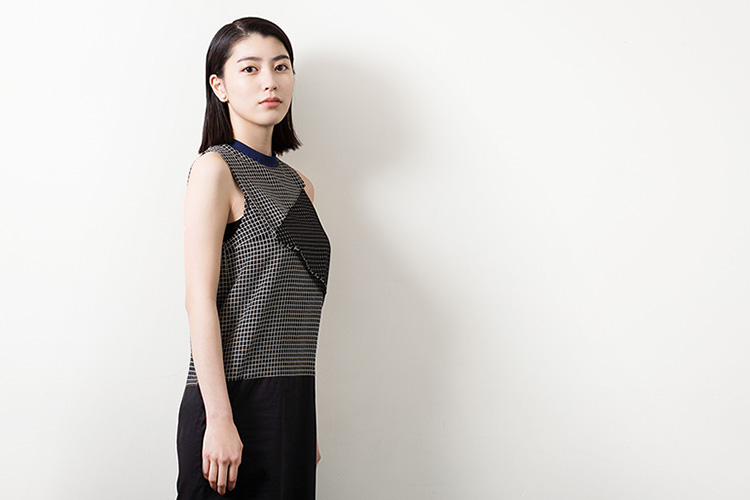
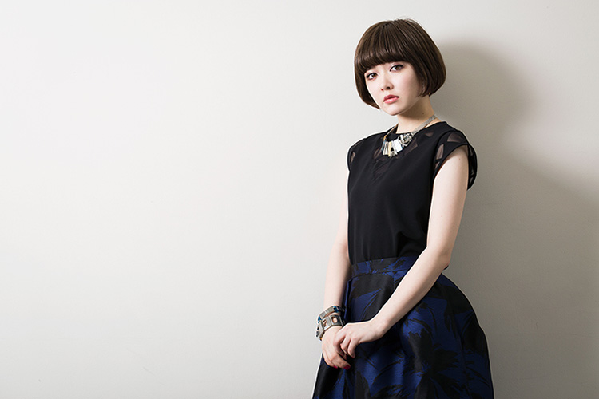
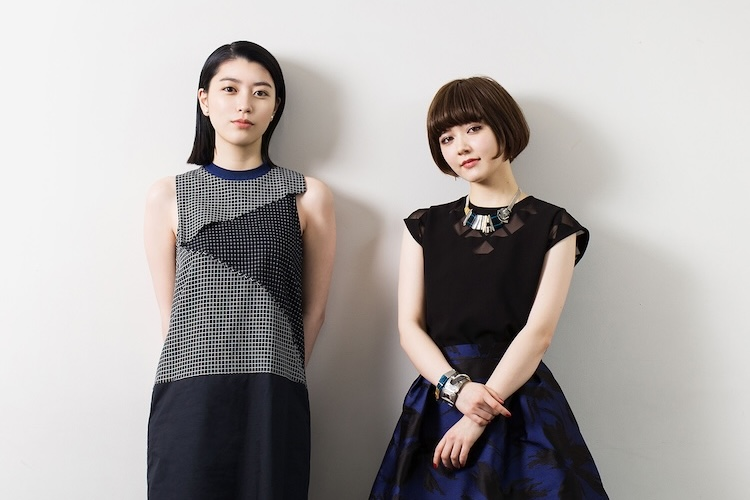

小池真理子の半自伝小説を完全映画化した矢崎仁司監督の新作『無伴奏』は、反戦運動や全共闘運動で時代が高揚していた仙台を舞台に多感な恋に揺れ動く男女４人（成海璃子、池松壮亮、斎藤工、遠藤新菜）の姿を切なく耽美な筆致で描いた青春ドラマ。主人公・響子が少女から大人になる２年間を繊細に演じきった実力派女優・成海璃子と、現役「non-no」モデルで、ワークショップを経て射止めたというエマ役を体当たりで演じ、溌剌とした輝きを見せる遠藤新菜の２人に話を聞いた。
響子が一転、恋にのめり込む。渉の「人と人との愛がなくて革命なんか起こせるかな」という言葉は大きかったと思いますね。（成海）
矢崎監督のワークショップを経て、遠藤さんの出演が決まったそうですが、共演が決まって最初に対面した時のお互いの印象は覚えていますか？
遠藤：
去年の２月に会ったのが最初でしたよね？
成海：
確かそうだね。本読みとカメラテストの時が最初だったと思います。
遠藤：
ちゃんとお話するのはもちろん初めてだったし、まだ初日なので、そんなに話すってことは無かったんですけど、そうですね、とてもシンプルなことですけど、気さくに接することで、現場に入りやすくしてくれました。
成海：
先に台本を読んでいて、エマというキャラクターは、４人の中でもポイントになる役だったので、どんな子になるのかなって思っていたんです。衣装合わせの時はまだ髪の毛が長くて、撮影の日にセシルカットにしてるのを見て、その瞬間に「あ、エマだ！」って。可愛いって思いましたね。
池松さんや斎藤工さんも映画への向かい方がストイックな印象があります。現場での４人はどんな雰囲気でしたか？
遠藤：
２人は思っていた通り、ストイックというか、口数がすごく多いわけではないんですけど、それぞれの中でこの役はこうありたいっていうのは持ってらっしゃるんだなってのは感じてました。でも基本的には、他愛もない会話が多かったんですよね（笑）
成海：
「無伴奏」（劇中のバロック喫茶）で、響子が３人（渉、裕之介、エマ）と出会うシーンの撮影が初日だったんですけど、あのシーンはエキストラの方々も含め登場人物が多くて、物凄く時間が掛かったんです。１日中あの現場にいたから、あの日をきっかけに喋るようになったよね。
遠藤：
寒かったので、みんなでストーブで暖まりながら（笑）
成海：
お話できるような内容ではないんですけど…（笑）
遠藤：
そうですよね（笑）でも堅い会話ではなく、砕けた話をしてたのが逆に良かったのかなって思いますね。「食べ物は何が好き？」とか「どういう人が好き？」みたいなレベルのカジュアルなお話をしてて、それがあって、４人の雰囲気が作れたかなって思います。

「現場では経歴関係なく対等」という池松さんの言葉に助けられたそうですね。
遠藤：
その話をするのは少し恥ずかしいんですけど（笑）私が現場を止めてしまったことがあったんです。涙を流すシーンで何度もカットになって、煮詰まってしまって。４人の中では、私はお芝居の経験も一番少なかったので。休憩を挟んだタイミングで、「気を張っちゃってるんじゃないの？」って、「こういう風にやったら失礼とか思わないで、対等だと思ってぶつかっていいんだよ」ってことを、池松さんと成海さんに言って頂いて。私が明らかにズーンって感じで部屋に入っていったので…。
成海：
長くやっていることで得られる自信っていうのは、場数を踏むことであるって思うんですけど、年功序列みたいなことでは全然ないから、それぞれどんな風に現場にいてもいいと思うんですよね。
現場での矢崎監督の演出はいかがでしたか？
遠藤：
指示っていう指示はなくて、時間を経て少しずつ増えてきたって印象はあるけど、ハッキリとこうしてほしいみたいなことは無かったですね。
そういった中で、どう役作りしていったんでしょうか。
成海：
役作りって何なんでしょうね…。そこに立っていればいいと私は思ってるんです。よくは分からないんですけど、私は渉のことが好きでそこにいればいいと思っていたので。
「真似っこ猿」という自覚もありながら当時の学生運動に参加していた響子が、刹那的に生きている３人（渉、祐之介、エマ）と出会ったことで何がどう変わっていったと思いますか？
成海：
「無伴奏」で３人と出会うシーンでも、自分が子供扱いされてる感じがあって、響子はそういうことにとても敏感だと思うんですよね。ちょっと大人びた渉さんと祐之介さんや、響子とは正反対の奔放なキャラクターのエマに、憧れのようなものを抱いたと思うんです。その中でも渉さんに関しては、初めての恋ですよね。運動にのめり込んでいた響子が一転、恋にのめり込む。渉の「人と人との愛がなくて革命なんか起こせるかな」という言葉は大きかったと思いますね。
エマと祐之介の関係性についてはいかがですか？
遠藤：
エマに関しては、祐之介さんが軸だから、YESって祐之介さんが言えば、私もYESみたいな。自分のすべてを託してて、ちょっと重いなって。作中に愛情表現みたいな描写は少ないかもしれないんですけど、細かく言えば、祐之介さんを見つめる眼差しだったりとか、そういうエマの「祐之介さんは私のものよ」感が観ている方に伝わっていたらいいなって思います。

エマの行く末を考えると儚いんだけど、本人は幸せなんだということが伝わるように、そこに存在したかったんです。（遠藤）
劇中では様々な嫉妬心が交錯しますよね。響子の気持ちに共感できましたか？
成海：
嫉妬ねぇ。
遠藤：
（笑）
成海：
することはすると思うんですけど、響子みたいにノートに書いたりするんじゃなく、「あのさ、あれ何？」って、率直に口に出して言います（笑）もどかしい感じにしないで、すぐに訊きますね。とにかくすぐ訊く（笑）
遠藤：
私も嫉妬はしますけど、訊けないタイプかもしれないです。ある意味で、響子に近い。う〜んって忘れるまで1人で考えるか、口に出す時には既に限界がきてるみたいな、そういう感じです（笑）
お互い役柄とは逆のタイプなんですね（笑）今回はお二人とも濡れ場にも挑戦されています。
成海：
脚本を頂いた時点でそういうシーンがあるのは分かっていたので、やるぞ、みたいな特別な気持ちは無かったですね。それより全体を通して、響子という役はしんどそうだなって思いが強かった。もちろん私は響子のような経験をしたことがないですから、後半の響子に訪れる展開を知った上でそれでも生きていくっていうのはやっぱり大変な役だなって思いましたね。
遠藤：
普通に着替えてるシーンでもエマは堂々と裸になるので、個人的にはむしろそっちの方がすごいなって思ってたんです（笑）濡れ場は全体を通して必要なシーンだし、変に構えるというよりは、委ねるような感覚でした。脱ぐことへの衝撃より、そもそも人物として衝撃的なことを言っちゃう子だなって印象だったので。エマの行く末を考えると儚いんだけど、本人は幸せなんだということが伝わるように、そこに存在したかったんです。強がってるエマも、ふとした時に切ないエマもどちらもエマだと思うので。
監督は、小道具や美術についても徹底してこだわるそうですが、響子のデッサンノートは原作者の小池さんのエピソードから取り入れられたとか。
成海：
そうなんです。原作の小池さんが当時書いてたデッサンノートのコピーを貰ったんです。撮影前にそれに目を通してて、「こういうことを書いてたのか」と思って、響子は毎日そのノートを持ち歩く役だったので、私も普段から喫茶店とかに行く時もノートと万年筆は持ち歩くようにして、ふとした時に書く事に慣れようとはしていました。

場面スチール写真としても使われている、ハットを被った響子がエマと木の下で何気ない会話をするシーンの２人がとても良くて。
成海：
あれは響子の図太さが出てるシーンだなって思いますね。あんな決定的な場面の後で、男装して会いに行くっていうのは相当図太いって思います。私も台本読んだ時はびっくりしたんですけど、それがまたいいなって思ったシーンですね。
なるほど。こういう一見すると本筋ではない場面のディテールに、何度も観返したくさせるような力がありますよね。２人のシーンで言うと、橋の上でミック・ジャガーの話をするシーンなんかも。
成海：
あのシーンいいですね。
遠藤：
私も好きでした。必要ですよね。他愛も無いシーンだけど、エマが響子に歩み寄りたい気持ちも出てるし。
映画を豊かにしてるなって思います。あと、劇中で「愛してる」という言葉が頻繁に交わされますが、現実ではあまり使わない言葉だからこそ印象深い響きがありました。「愛してる」という言葉について聞かせて下さい。
成海：
愛してるかぁ。私自身、愛ということを分かっていないので、分かっていない言葉は言わないです（笑）「好き」とは言えるけど、言わないかなって思います。
遠藤：
確かに烏滸がましいですよね、「愛してる」って言うのは。だからこそ素敵ですよね。それを真っ直ぐ伝えられる２人の関係が愛おしいなぁって。上品さがありますよね、「好きだよ」という響きとはまた違って。
最後に。これは1970年前後の物語ですが、社会の喧騒なんかは現代に通じる部分もある気がします。この映画は今の若者にはどう映ると思いますか？
成海：
時代背景は今から随分前ですけど、響子たちが抱いてる感情というのはどの時代も変わらない普遍的なものだと私は思いますね。
遠藤：
本当にそう思いますし、ちょっとした言い回しとかに、今と比べてシャイな部分、逆に大胆な部分はあったりするけど、どんな世代の方にも共通して伝わるテーマだと思います。